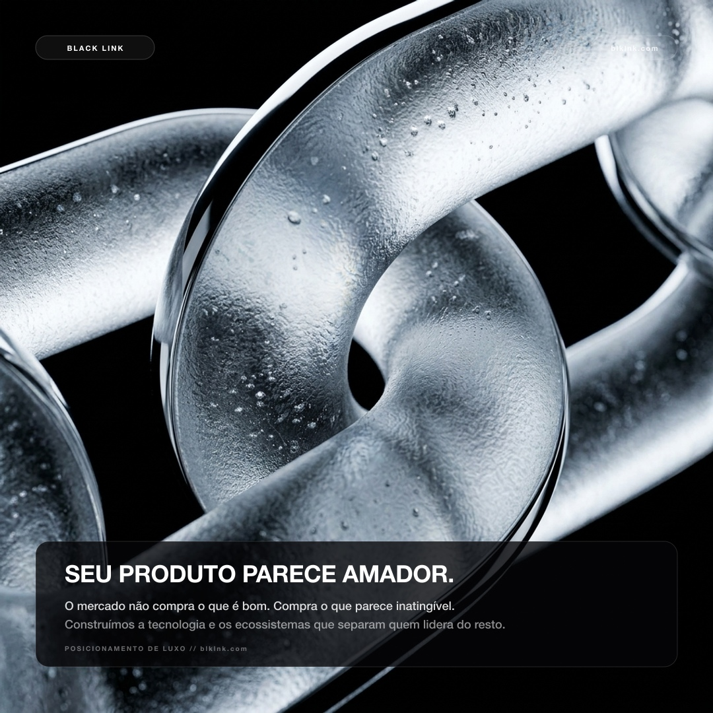
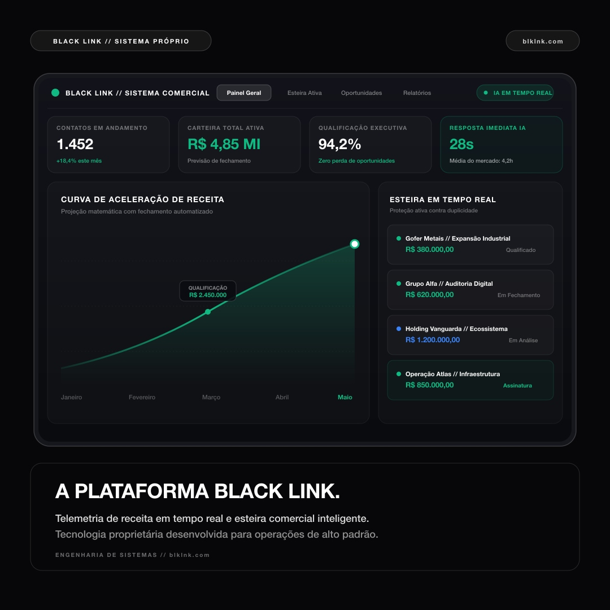
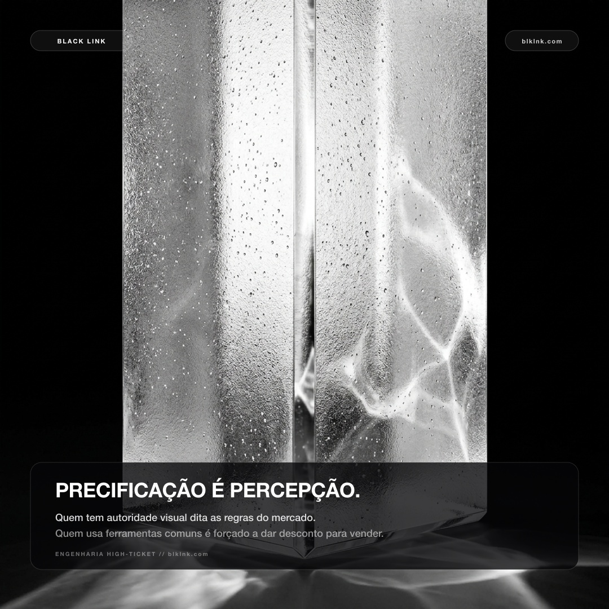
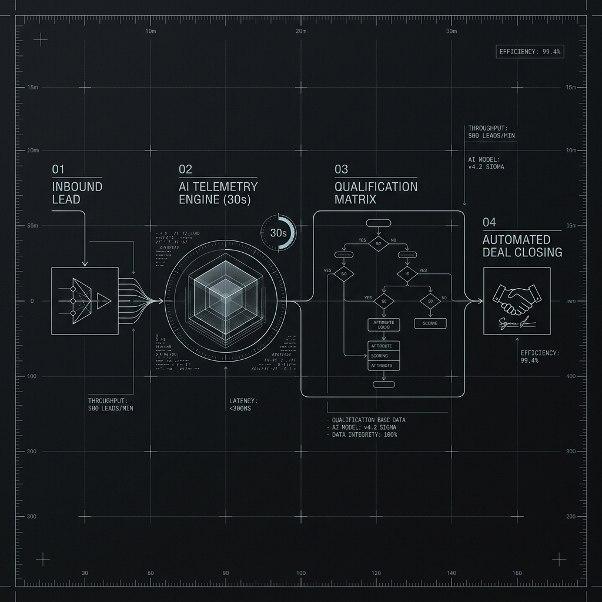
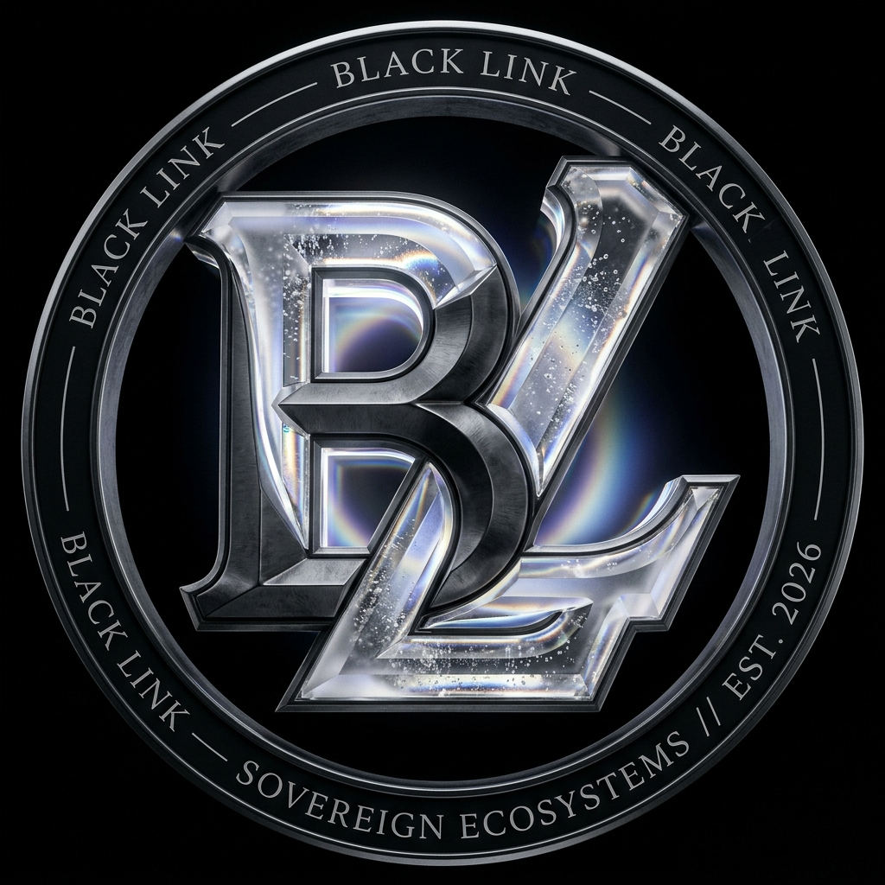
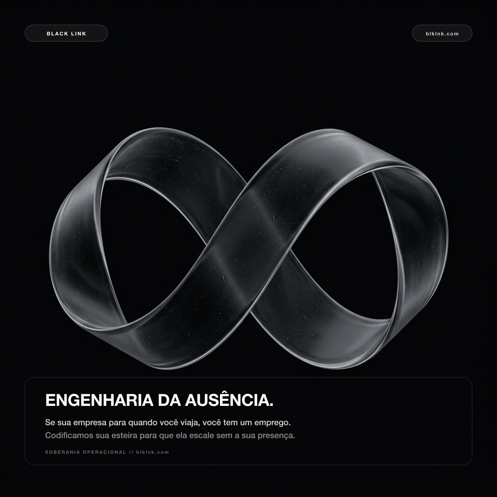
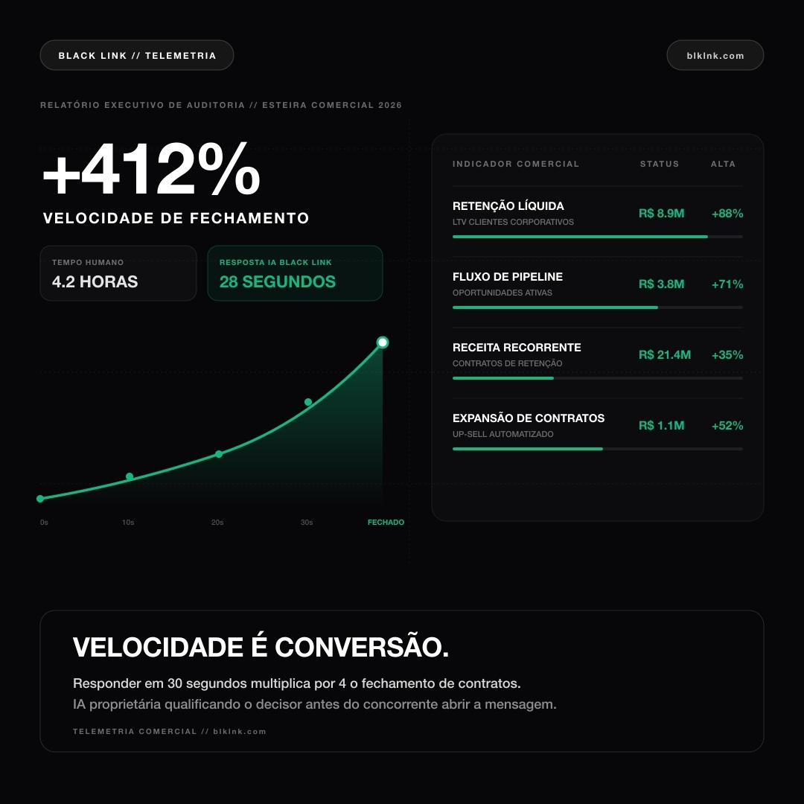
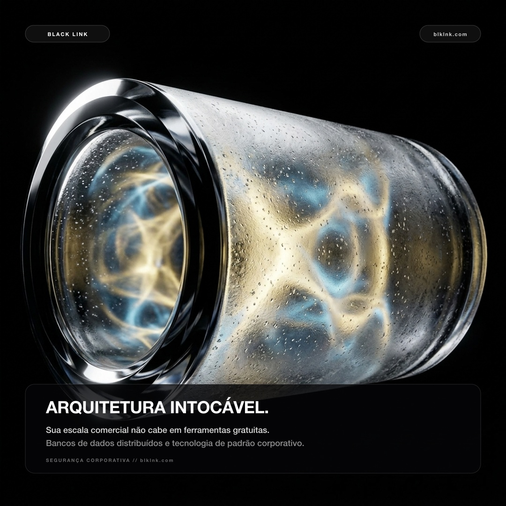
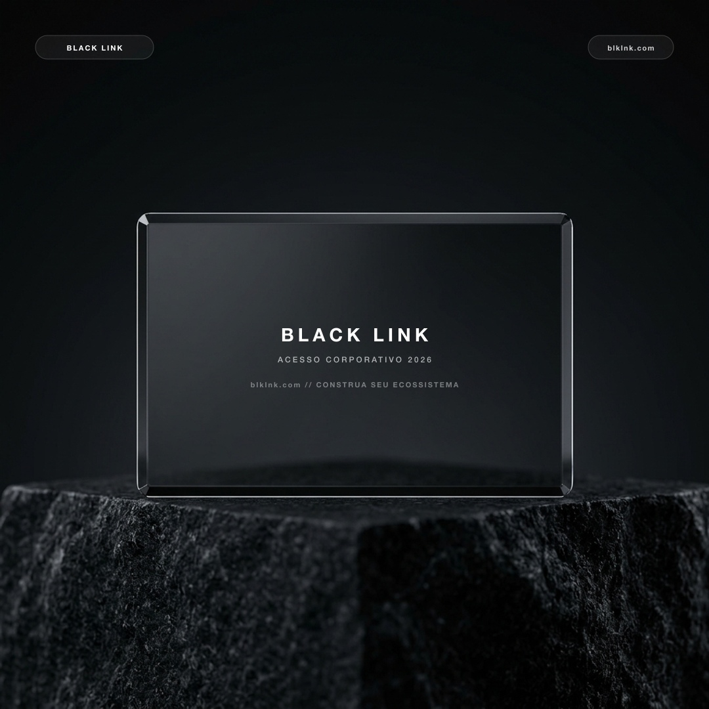

Sem números falsos, sem termos em inglês e com rigor suíço absoluto. Os dois manifestos do prisma óptico (#01 e #07), o software real traduzido (#02), o emblema sagrado ao centro (#05) e esculturas minerais puras em vidro fosco.

MANIFESTO PRISMA: O MERCADO NÃO COMPRA O QUE É BOM

SOFTWARE: PLATAFORMA BLACK LINK CRM (100% PT)

ESCULTURA: ELOS ENTRELAÇADOS EM VIDRO

ESTRATÉGIA: ECOSSISTEMAS VENCEM CURSOS

O EMBLEMA MONOLÍTICO DA MARCA

AUTONOMIA: ENGENHARIA DA AUSÊNCIA

MANIFESTO PRISMA 02: O PREÇO É DEFINIDO PELA PERCEPÇÃO

SEGURANÇA: INFRAESTRUTURA INTOCÁVEL

O CONVITE: ACESSO CORPORATIVO 2026